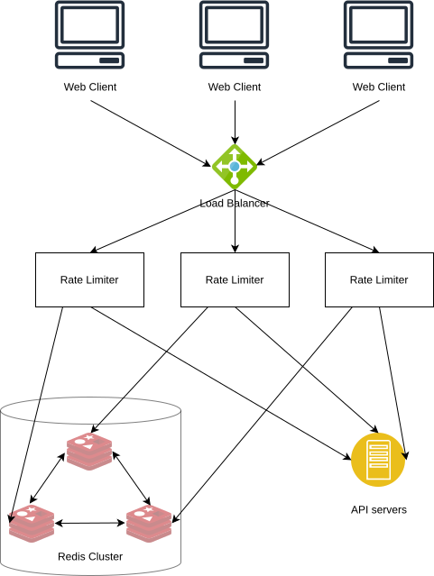

Case Study: Designing a Scalable Distributed Rate Limiter
Note from the Founder: We’re publishing the complete analysis to demonstrate our expertise in distributed systems architecture. If you’re evaluating system design capabilities for your project, this represents the depth of analysis we bring to every engagement. We’re available for consulting on similar architectures: contact@wynertech.com
Executive Summary
This case study details the architecture and implementation of a production-grade, distributed rate limiting system. We evaluated core algorithms (Token Bucket, Fixed Window, Rolling Window) and implemented a highly available solution using Redis Sorted Sets and Lua scripts to achieve low-latency, accurate request throttling at scale, preventing API abuse and ensuring fair resource allocation.
1. Core Rate Limiting Algorithms
We analyzed three fundamental algorithms, each with distinct trade-offs between accuracy, memory use, and burst handling.
Token Bucket
- Principle: A bucket holds tokens (capacity). Requests consume tokens, which refill at a steady rate.
- Use Case: Ideal for allowing controlled bursts of traffic. Simple and memory-efficient.
- Limitation: Prone to race conditions under high concurrency.
Fixed Window Counter
- Principle: Counts requests in fixed, consecutive time windows (e.g., per minute).
- Use Case: Simple to implement.
- Critical Flaw: Fails at window boundaries, allowing 2x the limit if requests straddle two windows.
Rolling Window Counter
- Principle: Maintains a precise, moving time window by tracking individual request timestamps [2].
- Use Case: Accurate enforcement, preventing boundary exploits.
- Cost: Requires more memory to store timestamps.
Algorithm Comparison
| Algorithm | Accuracy | Memory Efficiency | Burst Handling | Best For |
|---|---|---|---|---|
| Token Bucket | Medium | Excellent | Excellent | API limits with bursts |
| Fixed Window | Low | Excellent | Poor | Simple throttling |
| Rolling Window | High | Moderate | Good | Precise enforcement |
2. Chosen Architecture: Redis Sorted Sets
We selected the Rolling Window algorithm for accuracy, implemented with Redis Sorted Sets. This in-memory data store provides the necessary performance and atomic operations.
Why Redis Sorted Sets?
- Speed: In-memory storage [9] avoids disk serialization overhead [10][11].
- Atomic Operations: Commands like
ZADDandZREMRANGEBYSCORErun atomically, preventing race conditions. - Built-in Data Structure: Sorted Sets are ideal for storing timestamps sorted by score, enabling efficient window calculations with O(log N) complexity.
- Lua Scripting: Allows bundling multiple Redis commands into a single, server-side atomic operation.
System Architecture

Request Flow:
- Client request arrives at the Load Balancer.
- Request is forwarded to a Rate Limiter service.
- The service executes a Lua script on Redis that atomically:
- Removes old timestamps outside the window (
ZREMRANGEBYSCORE). - Counts remaining requests (
ZCARD). - If under the limit, adds the new request timestamp (
ZADD) and sets a key expiry (EXPIRE).
- Removes old timestamps outside the window (
- Based on the result, the request is either allowed to proceed to the backend API or rejected with a
429 Too Many Requestsstatus.
3. Solving Distributed Challenges
Race Condition Prevention
Concurrent requests can cause a read-modify-write race condition, leading to undercounting. We eliminate this by executing the entire check-and-update logic (cleanup, count, add) within a single Lua script, guaranteeing atomicity on the Redis server.
Concurrent Request Limiting
For limiting simultaneous operations (e.g., concurrent uploads), we extend the pattern using a unique request_id as the Sorted Set member. This allows us to track and remove specific requests upon completion, accurately enforcing concurrency limits.
Scaling with Redis Cluster
For high availability and scalability, we use Redis Cluster:
- Data Sharding: Automatically partitions data across multiple nodes [3][4][7].
- High Availability: Each shard has a leader and replicas; failures trigger automatic failover [5][8].
- Consistency Note: The system favors availability and partition tolerance (AP from CAP), meaning reads post-write may briefly see stale data during a failover—an acceptable trade-off for rate limiting.
4. Performance & Design Considerations
The architecture is designed to meet the core requirements for a high-scale rate limiter: low latency, high accuracy, and high availability. The following table summarizes the design targets and theoretical advantages of our chosen approach:
| Design Goal | How Our Architecture Achieves It | Basis in Analysis |
|---|---|---|
| Low Latency | In-memory Redis operations & atomic Lua scripts minimize round trips. | Analysis states in-memory stores “avoid the overhead of encoding for disk” and Lua scripts provide “atomic operations with minimal latency” [1][13]. |
| High Accuracy | Rolling window algorithm with Redis Sorted Sets prevents boundary bursts that affect fixed windows. | Comparative analysis shows rolling windows provide “High” accuracy versus “Low” for fixed windows. |
| Memory Efficiency | Automatic cleanup via ZREMRANGEBYSCORE and EXPIRE prevents leaks. Per-user memory is predictable. |
Algorithm analysis includes memory estimates (e.g., ~16 bytes/user for Token Bucket, ~8L bytes/user Rolling Windows with Redis sorted sets, where L is the request limit). |
| Concurrency Safety | Atomic Lua scripts encapsulate the read-cleanup-add cycle. | Section on race conditions concludes Lua scripts are executed atomically on the server [6], preventing lost updates. |
| High Availability & Scalability | Redis Cluster with leader-replica replication [12] and automatic failover. | Design states cluster provides “horizontal scaling and improving performance” and “maintain availability” during node failure. |
Key Trade-off Acknowledged (CAP Theorem): The use of an asynchronously replicated Redis Cluster favors Availability and Partition Tolerance (AP). This means the system maintains operation during node failures, but clients may briefly encounter stale data or acknowledged writes may be lost during a leader failover—an accepted trade-off for a rate limiter where momentary, slight inaccuracy is preferable to being completely unavailable.
5. Key Takeaways
❗ Foundational Trade-off: Embrace AP from CAP In a distributed rate limiter, favor Availability and Partition Tolerance (AP). Using an asynchronously replicated Redis Cluster means the system stays up during failures, but clients may briefly see stale data or lose acknowledged writes during a leader failover. This is the correct trade-off: a slightly inaccurate rate limiter is better than one that blocks all traffic.
Beyond this core principle, here are the critical lessons from this design:
- Algorithm Choice Dictates Behavior: Use Token Bucket for predictable bursts, Rolling Window for precise enforcement, and Concurrent Limiters for protecting finite resources (e.g., database connections). There is no one-size-fits-all solution.
- Atomicity is Non-Negotiable for Correctness: In a distributed system, race conditions are a guarantee, not a possibility. Lua scripts (or equivalent atomic transactions) are essential for bundling the read-cleanup-write cycle into a single, thread-safe operation.
- Leverage Purpose-Built Data Structures: Redis Sorted Sets are not just a cache; they are a specialized data structure that provides O(log N) sorting and range operations, which are perfectly suited for efficient timestamp window calculations.
- Design for the Distribution, Not the Single Node: Assume multiple rate limiter instances from the start. A shared data store (Redis Cluster) is required for consistent state, and the architecture must remain stateless to enable horizontal scaling.
- Memory is a Scalability Dimension: The rolling window algorithm trades memory (storing timestamps) for accuracy. Model your memory needs (e.g.,
8 bytes * limit_per_user * total_users) to ensure the system scales predictably. - Observability is Part of the Design: The system must expose metrics (throttle rates, Redis latency, memory usage) to validate performance, tune limits, and detect abuse patterns or infrastructure degradation.
References
[1] Tarjan, P. (2017). Scaling your API with rate limiters [Gist]. Retrieved November 4, 2025, from https://gist.github.com/ptarjan/e38f45f2dfe601419ca3af937fff574d#request-rate-limiter
[2] Hayes, P. (2015, February 6). Better Rate Limiting With Redis Sorted Sets. ClassDojo Engineering Blog. Retrieved November 4, 2025, from https://engineering.classdojo.com/blog/2015/02/06/rolling-rate-limiter/
[3] Redis. (n.d.). Scale with Redis Cluster. Redis Documentation. Retrieved November 10, 2025, from https://redis.io/docs/latest/operate/oss_and_stack/management/scaling/
[4] Redis. (n.d.). Redis cluster specification. Redis Documentation. Retrieved November 17, 2025, from https://redis.io/docs/latest/operate/oss_and_stack/reference/cluster-spec/
[5] Redis. (n.d.). High availability with Redis Sentinel. Redis Documentation. Retrieved November 17, 2025, from https://redis.io/docs/latest/operate/oss_and_stack/management/sentinel/
[6] Redis. (n.d.). Atomicity with Lua. Redis Learn. Retrieved November 26, 2025, from https://redis.io/learn/develop/java/spring/rate-limiting/fixed-window/reactive-lua
[7] Namuag, P. (2021, July 1). Hash Slot vs. Consistent Hashing in Redis. Severalnines Blog. Retrieved November 17, 2025, from https://severalnines.com/blog/hash-slot-vs-consistent-hashing-redis/
[8] Kong, C. (2023, June 12). Redis Sentinel vs Redis Cluster: A Comparative Overview. Medium. Retrieved November 10, 2025, from https://medium.com/@chaewonkong/redis-sentinel-vs-redis-cluster-a-comparative-overview-8c2561d3168f
[9] IBM. (n.d.). What is Redis?. IBM Think Topics. Retrieved November 11, 2025, from https://www.ibm.com/think/topics/redis
[10] Kleppmann, M. (2017). Designing Data-Intensive Applications: The Big Ideas Behind Reliable, Scalable, and Maintainable Systems. O’Reilly Media, Inc.
[11] Harizopoulos, S., Abadi, D. J., Madden, S., & Stonebraker, M. (2018). OLTP through the looking glass, and what we found there. In Making Databases Work: The Pragmatic Wisdom of Michael Stonebraker (pp. 409–439).
[12] Riak. (n.d.). Distributed Data Types – Riak 2.0. Riak Documentation. Retrieved December 1, 2025, from https://riak.com/distributed-data-types-riak-2-0/
[13] Redis. (n.d.). EVAL. Redis Commands. Retrieved December 2, 2025, from https://redis.io/docs/latest/commands/eval/
For access to the extended version of this case study with additional implementation details, code examples, and performance benchmarks, please contact us via email: contact@wynertech.com Kindly specify your purpose for the request (e.g., industrial development, educational use, or interview preparation).